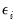
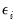
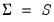
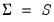
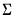
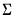

|
|
|
is a vector of variable means,
is a matrix of coefficients, is a
vector of standardized unobserved variables, termed common factors, and
is a
vector of errors or unique factors.
The factor loading or pattern matrixlinks the unobserved common factors to the observed data. The j-th row of
represents the loadings of the j-th variable on the common factors. Alternately, we may view the row as the coefficients for the common factors for the j-th variable.
, where the are taken from the diagonal elements of , and
is the corresponding diagonal element of
.
represents common portion of the variance of the j-th variable, termed the communality, while
is the unique portion of the variance, also referred to as the uniqueness.
Furthermore, the factor structure matrix containing the correlations between the variables and factors may be obtained from:
as functions of the
factor loadings in
, and
specific variances in . Given estimates of and , we may form estimates of the fitted total variance matrix, , and the fitted common variance matrix, . If
is the observed dispersion matrix, we may use these estimates to define the total variance residual matrix and the common variance residual .
Choosing the number of factors is generally agreed to be one of the most important decisions one makes in factor analysis (Preacher and MacCallum, 2003; Fabrigar, et al., 1999; Jackson, 1993; Zwick and Velicer, 1986). Accordingly, there is a large and varied literature describing methods for determining the number of factors, of which the references listed here are only a small subset.The Kaiser-Guttman rule, commonly termed “eigenvalues greater than 1,” is by far the most commonly used method. In this approach, one computes the eigenvalues of the unreduced dispersion matrix, and retains as many factors as the number eigenvalues that exceed the average (for a correlation matrix, the average eigenvalue is 1, hence the commonly employed description). The criterion has been sharply criticized by many on a number of grounds (e.g., Preacher and MacCallum, 2003), but remains popular.We may compare the relative proportions of the total variance that are accounted for by each eigenvalue to the expected proportions obtained by chance (Jackson, 1993). More precisely, the broken stick method compares the proportion of variance given by j-th largest eigenvalue of the unreduced matrix with the corresponding expected value obtained from the broken stick distribution. The number of factors retained is the number of proportions that exceed their expected values.Bai and Ng (2002) propose a model selection approach to determining the number of factors in a principal components framework. The technique involves least squares regression using different numbers of eigenvalues obtained from a principal components decomposition. See “Bai and Ng” for details.Ahn and Horenstein (AH, 2013) provide a method for obtaining the number of factors that exploits the fact that thelargest eigenvalues of a given matrix grow without bounds as the rank of the matrix increases, whereas the other eigenvalues remain bounded. The optimization strategy is then simply to find the maximum of the ratio of two adjacent eigenvalues. See “Ahn and Horenstein” for discussion.
.
Under the multivariate normal distributional assumptions and a correctly specified factor specification estimated by ML or GLS, the chi-square test statisticis distributed as an asymptotic
random variable with degrees-of-freedom (e.g., Hu and Bentler, 1995). A large value of the statistic relative to the
indicates that the model fits the data poorly (appreciably worse than the saturated model).
Note that two distinct sets of chi-square tests that are commonly performed. The first set compares the fit of the estimated model against a saturated model; the second set of tests examines the fit of the independence model. The former are sometimes termed tests of model adequacy since they evaluate whether the estimated model adequately fits the data. The latter tests are sometimes referred to as test of sphericity since they test the assumption that there are no common factors in the data.

rotation matrix where . Then we may re-write the factor model Equation (60.1) as:
. In orthogonal rotation, we impose
constraints on the transformation matrix
so that
, implying that the rotated factors are orthogonal. In oblique rotation, we impose only
constraints on
, requiring the diagonal elements of
equal 1.
assign greater weight to factor complexity and less weight to variable complexity.
. Generally speaking, these methods optimize some property of the estimated scores with respect to the choice of
. For example, Thurstone’s regression approach maximizes the correlation of the scores with the true factors (Gorsuch, 1983). Other methods minimize a function of the estimated errors with respect to
, subject to constraints on the estimated factor scores. For example, Anderson and Rubin (1956) and McDonald (1981) compute weighted least squares estimators of the factor scores, subject to the condition that the implied correlation structure of the scores , equals
.
The second set of methods computes coarse coefficient weights in which the elements ofare restricted to be (-1, 0, 1) values. These simplified weights are determined by recoding elements of the factor loadings matrix or an exact coefficient weight matrix on the basis of their magnitudes. Values of the matrices that are greater than some threshold (in absolute value) are assigned sign-corresponding values of -1 or 1; all other values are recoded at 0 (Grice, 2001).
There are an infinite number of factor score estimates that are consistent with an estimated factor model. This lack of identification, termed factor indeterminacy, has received considerable attention in the literature (see for example, Mulaik (1996); Steiger (1979)), and is a primary reason for the multiplicity of estimation methods, and for the development of procedures for evaluating the quality of a given set of scores (Gorsuch, 1983, p. 272).Indeterminacy IndicesThe diagonal elements ofare termed validity coefficients. These coefficients range from -1 to 1, with high positive values being desired. Differences between the validities and the multiple correlations are evidence that the computed factor scores have determinacies lower than those computed using the
-values. Gorsuch (1983) recommends obtaining validity values of at least 0.80, and notes that values larger than 0.90 may be necessary if we wish to use the score estimates as substitutes for the factors.
The off-diagonal elements ofallow us to measure univocality, or the degree to which the estimated factor scores have correlations with those of other factors. Off-diagonal values of
that differ from those in
are evidence of univocality bias.
Lastly, we obviously would like the estimated factor scores to match the correlations among the factors themselves. We may assess the correlational accuracy of the scores estimates by comparing the values of the with the values of.
 , the
, the  -vector
-vector  is generated by:
is generated by: observable variables in terms of
observable variables in terms of  unobservable common factors
unobservable common factors  , and
, and  unobservable unique factors . Note that the number of unobservables exceeds the number of observables.
unobservable unique factors . Note that the number of unobservables exceeds the number of observables.  , , and where
, , and where  is a diagonal matrix of unique variances. Given these assumptions, we may derive the fundamental variance relationship of factor analysis by noting that the variance matrix of the observed variables is given by:
is a diagonal matrix of unique variances. Given these assumptions, we may derive the fundamental variance relationship of factor analysis by noting that the variance matrix of the observed variables is given by: are given by the diagonal elements of
are given by the diagonal elements of  (the row-norms of
(the row-norms of  ).
). eigenvalues to exceed some threshold fraction of the total variance. This method is used more often in principal components analysis where researchers typically include components comprising 95% of the total variance (Jackson, 1993).
eigenvalues to exceed some threshold fraction of the total variance. This method is used more often in principal components analysis where researchers typically include components comprising 95% of the total variance (Jackson, 1993). components have been partialed out (for ). The number of factor retained is the number that minimizes this average. The intuition here is that the average squared partial correlation is minimized where the residual matrix is closest to being the identity matrix.
components have been partialed out (for ). The number of factor retained is the number that minimizes this average. The intuition here is that the average squared partial correlation is minimized where the residual matrix is closest to being the identity matrix.  represent the observed dispersion matrix and let the fitted matrix be . Then the discrepancy functions for ML, GLS, and ULS are given by:
represent the observed dispersion matrix and let the fitted matrix be . Then the discrepancy functions for ML, GLS, and ULS are given by: and unique variances
and unique variances  . An iterative algorithm for this optimization is detailed in Jöreskog. The functions all achieve an absolute minimum value of 0 when , but in general this minimum will not be achieved.
. An iterative algorithm for this optimization is detailed in Jöreskog. The functions all achieve an absolute minimum value of 0 when , but in general this minimum will not be achieved. eigenvalues and eigenvectors. Loading estimates,
eigenvalues and eigenvectors. Loading estimates,  are be obtained from the eigenvectors of the reduced matrix. Given the loading estimates, we may form a common variance residual matrix, . Estimates of the uniquenesses are obtained from the diagonal elements of this residual matrix.
are be obtained from the eigenvectors of the reduced matrix. Given the loading estimates, we may form a common variance residual matrix, . Estimates of the uniquenesses are obtained from the diagonal elements of this residual matrix. of the original diagonal elements of
of the original diagonal elements of  . One important special case is to use ; the resulting estimates may be viewed as those from a truncated principal components solution.
. One important special case is to use ; the resulting estimates may be viewed as those from a truncated principal components solution. as updated estimates of the communalities. This step may be repeated for a fixed number of iterations, or until the results are stable.
as updated estimates of the communalities. This step may be repeated for a fixed number of iterations, or until the results are stable.  variables and
variables and  factors has free parameters ( factor loadings and
factors has free parameters ( factor loadings and  uniqueness elements, less implicit zero correlation restrictions on the factors). Since there are
uniqueness elements, less implicit zero correlation restrictions on the factors). Since there are  distinct elements of the dispersion matrix, there are a total of remaining degrees-of-freedom.
distinct elements of the dispersion matrix, there are a total of remaining degrees-of-freedom. , and the number of degrees-of-freedom.
, and the number of degrees-of-freedom. statistic is poor for small samples and non-normal settings. One popular adjustment for small sample size involves applying a Bartlett correction to the test statistic so that the multiplicative factor in the definition of
statistic is poor for small samples and non-normal settings. One popular adjustment for small sample size involves applying a Bartlett correction to the test statistic so that the multiplicative factor in the definition of  is replaced by
is replaced by  (Johnston and Wichern, 1992).
(Johnston and Wichern, 1992). , subject to any constraints on the factor correlation. Jennrich (2001, 2002) describes algorithms for performing orthogonal and oblique rotations by minimizing complexity objective.
, subject to any constraints on the factor correlation. Jennrich (2001, 2002) describes algorithms for performing orthogonal and oblique rotations by minimizing complexity objective. matrix
matrix  where every element equals the square of a corresponding factor loading : . Intuitively, one or more measures of simplicity of the rotated factor pattern can be expressed as a function of these squared loadings. One such function defines the Crawford-Ferguson family of complexities:
where every element equals the square of a corresponding factor loading : . Intuitively, one or more measures of simplicity of the rotated factor pattern can be expressed as a function of these squared loadings. One such function defines the Crawford-Ferguson family of complexities: . The Crawford-Ferguson (CF) family is notable since it encompasses a large number of popular rotation methods (including Varimax, Quartimax, Equamax, Parsimax, and Factor Parsimony).
. The Crawford-Ferguson (CF) family is notable since it encompasses a large number of popular rotation methods (including Varimax, Quartimax, Equamax, Parsimax, and Factor Parsimony). is evaluated using the Crawford-Ferguson objective with factor complexity weight .
is evaluated using the Crawford-Ferguson objective with factor complexity weight . 
 matrix of target loadings. Missing values correspond to unrestricted elements. (
matrix of target loadings. Missing values correspond to unrestricted elements. ( matrix of factor score coefficients derived from the estimates of the factor model. Often, we will construct estimates using the original data so that but this is not required; we may for example use coefficients obtained from one set of data to score individuals in a second set of data.
matrix of factor score coefficients derived from the estimates of the factor model. Often, we will construct estimates using the original data so that but this is not required; we may for example use coefficients obtained from one set of data to score individuals in a second set of data. and its square . The squared multiple correlations are obtained from the diagonals of the matrix where  is the observed dispersion matrix and is the factor structure matrix. Both of these indices range from 0 to 1, with high values being desirable.
and its square . The squared multiple correlations are obtained from the diagonals of the matrix where  is the observed dispersion matrix and is the factor structure matrix. Both of these indices range from 0 to 1, with high values being desirable.  . The minimum correlation measure ranges from -1 to 1. High positive values are desirable since they indicate that differing sets of factor scores will yield similar results.
. The minimum correlation measure ranges from -1 to 1. High positive values are desirable since they indicate that differing sets of factor scores will yield similar results. that do not exceed 0.707 by a significant degree are problematic since values below this threshold imply that we may generate two sets of factor scores that are orthogonal or negatively correlated (Green, 1976).
that do not exceed 0.707 by a significant degree are problematic since values below this threshold imply that we may generate two sets of factor scores that are orthogonal or negatively correlated (Green, 1976). as the population factor correlation matrix,
as the population factor correlation matrix,  as the factor score correlation matrix, and as the correlation matrix of the known factors with the score estimates. In general, we would like these matrices to be similar.
as the factor score correlation matrix, and as the correlation matrix of the known factors with the score estimates. In general, we would like these matrices to be similar.  may be obtained from moments of the estimated scores. Computation of
may be obtained from moments of the estimated scores. Computation of  is more complicated, but follows the steps outlined in Gorsuch (1983).
is more complicated, but follows the steps outlined in Gorsuch (1983).